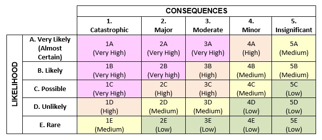
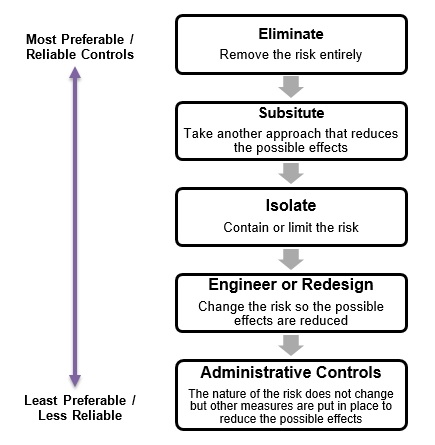

Purpose and Scope
The purpose of this policy and procedure is to set out how risks to Participants (including children), staff and Wagtail Services are identified and managed. It applies to all staff and meets relevant legislation, regulations and standards as set out in Schedule 1, Legislative References.
Incident Management and Work Health and Safety are dealt with in separate policies and procedures specific to these areas.
Applicable NDIS Practice Standards
Risk Management
Outcome: Risks to Participants, workers and the provider are identified and managed.
Indicators:
- Risks to the organisation, including risks to Participants, financial and work health and safety risks, and risks associated with provision of supports are identified, analysed, prioritised and treated.
- A documented system that effectively manages identified risks is in place and is relevant and proportionate to the size and scale of the provider and the scope and complexity of supports provided.
-
Support delivery is linked to a risk management system which
includes:
- Incident Management;
- Complaints Management;
- Work Health and Safety;
- Human Resource Management;
- Financial Management;
- Information Management; and
- Governance.
Definitions
- Event: occurrence or change of a particular set of circumstances. An event can have one or more occurrences, and can have several causes and several consequences. An event can also be something that is expected and does not happen, or something that is not expected and does happen. An event can be a risk source. 7
- Consequence: outcome of an event affecting objectives. A consequence can be certain or uncertain, can have positive or negative direct or indirect effects on objectives. 8
- Likelihood: Chance of something happening. 9
-
Risk: any internal or external situation or event
that has the potential to have an impact (either positive or
negative) on people associated with the organisation, the
organisation successfully achieving its outcomes and delivering
its services, the organisation’s viability or its reputation. From
a Risk Management perspective, risk is the combination of the
likelihood (chance) of an event occurring and the consequences
(impact) if it does.
- Managed Risk - the level of risk remaining after risk treatment plans have been put in place and are being followed.
- Unmanaged Risk - The level of risk before any action has been taken to manage it.
- Risk Analysis: the process to understand the nature, sources and causes of risks to determine the degree of risk. The degree and consequences of risk together inform risk evaluation and decisions about risk treatment.
-
Risk Assessment: the overall process for
identifying, analysing and evaluating risks. Risk assessments
assist in determining:
- what levels of harm can occur;
- how harm can occur; and
- the likelihood that harm will occur.
- Risk Evaluation: The process of determining whether a risk is tolerable or whether it requires ‘risk treatment’.
- Risk Identification: the process of finding, recognising and describing risks.
-
Risk Treatment: a measure, work process or system
used to eliminate a risk, or if this is not possible, reduce the
risk so far as is practicable. Options include:
- Avoiding the Risk – where the level of risk is unacceptable, and the means of risk control are either not viable, not worthwhile or not actionable, risk could be eliminated by not proceeding with the activity that could generate the risk.
- Changing the Risk Consequence – undertake actions aimed at reducing the impact of the risk.
- Changing the Risk Likelihood – undertake actions aimed at reducing the probability of the risk occurring.
-
Retaining or Accepting the Risk – Accept the risk as it
is. This is appropriate where:
- it is not possible to treat the risk;
- it is uneconomic to treat the risk; or
- the risk level is tolerable.
- Sharing the Risk – Responsibility for treating the risk can be transferred or allocated to other parties best able to manage it. For example, using insurers.
Policy
Wagtail Services takes its responsibility to identify and manage all types of organisational risks very seriously. Risk management is incorporated into all areas of its operations and the system is appropriate to the business’ size and the classes of NDIS supports it provides.
Wagtail Services’ approach to risk management is based on Australian and International Standard AS ISO 31000:2018 (Risk Management Guidelines) and deals with how an organisation approaches, identifies, treats and manages organisational risks.
Wagtail Services’ Directors and Manager are ultimately responsible for the risk management process. However, all staff are expected to act responsibly to minimise risks to themselves and others, and report hazards and other risks as soon as they are identified.
Procedures
General
Wagtail Services’ Leadership Team is responsible for showing leadership and commitment in its risk management approach. This includes monitoring and reviewing Wagtail Services’ risk management practices to ensure they are appropriate to the organisation’s needs, in consultation with staff, Participants and other stakeholders.
Leadership Team members must:
- support risk management in all areas of Wagtail Services’ operations;
- have clear accountability, ownership and governance;
- be responsive, systematic, transparent and consistent in the risk management approach;
- support evidence-based decision-making;
- include effective and regular consultation and communication with relevant stakeholders;
- ensure staff understand their risk management responsibilities;
- foster a positive, risk-aware culture; and
- facilitate regular reviews and continual improvement.
All staff must support Wagtail Services in risk management, and are expected to help identify, analyse, treat, monitor and report risks in their areas of responsibility.
Risks are to be monitored and reviewed based on their potential severity and likelihood – those risks with greater impact/higher risks would be monitored and reviewed more frequently than low impact/low risks.
Communication and consultation is key to having a robust risk management system. Wagtail Services will include relevant key stakeholders in the risk assessment and management process, as well as providing regular information back to Participants, staff and/or stakeholders about risks that may affect them.
Wagtail Services’ Risk Management Approach is based on the following steps, where communication, consultation, monitoring and review occurs throughout the process:
- Understand. What is the scope, background, criteria for the risk management process. Use Wagtail Services’ Risk Assessment Form to document the risk assessment.
- Conduct Risk Assessment: Identify. Identify risks that relate to the business, for instance, risks to Participants, financial risks, market risks, reputational risks, and risks associated with providing NDIS supports.
- Conduct Risk Assessment: Analyse. Outline the causes, impacts and existing treatments related to each risk identified, in order to determine a Risk Rating. Risk Ratings are based on an assessment of the likelihood of the risk occurring and the likely consequences faced by the business/Participants/staff should the risk occur.
- Conduct Risk Assessment: Treat. Identify one or more Risk Treatments for each risk identified and implement existing and future treatments to prevent or mitigate the risk. The treatment/s should be relative to the nature and seriousness of the risk and what can be reasonably done based on the business' resources.
- Record and Report. Record identified risks in the Risk Register when the Risk Control Plan is complete, and update the register any time there is a change. Report information about the risks and actions to Management, staff, Participants and other stakeholders at quarterly intervals (or when things change).
Identifying Risks
To complete a thorough risk assessment, it is necessary to consider a range of possible events or risks that may occur. When identifying potential risks, Wagtail Services will take into account a variety of factors depending on the type of risk being assessed, including:
- physical or non-physical sources;
- threats and opportunities;
- strengths and weaknesses;
- indicators of emerging risks;
- knowledge and reliability of known information (or lack of);
- effects of time;
- nature and value of assets and resources; and/or
- biases, assumptions and experiences of those involved.
Risk Analysis and Evaluation
To analyse identified risks, Wagtail Services will use the following consequences definitions relevant to the category of risk being assessed. As part of determining the consequences and likelihood, it is important to consider the worst outcome most likely to occur, not the absolute worst possible outcome.
Consequences Matrix
| Measure | Financial | Operational | Health and Safety (Participants/Staff) | Compliance | Environmental |
|---|---|---|---|---|---|
| 1 Catastrophic | Loss of 5% Total Profit or more | Loss or delay of more than 1 week of service delivery Unstable workforce with high turnover of staff, more than 30% | Fatality (1 or more deaths); Long term changes and disruptions to routines. | Breach of federal, state or local council regulation resulting in business closure. | Environmental disaster resulting in permanent damage beyond the local area. |
| 2 Major | Loss of up to 5% Total Profit | Loss or delay of up to 1 week of service delivery Staff turnover greater than 20% | Loss of limb and/or Permanent Impairment; Significant change and disruptions to routines. | Breach of federal, state or local council regulation resulting in penalties and/or prosecution | Irreversible environmental damage to the local area. |
| 3 Moderate | Loss of up to 3% Total Profit | Loss or delay of up to 3 days of service delivery Staff turnover greater than 10% | Doctor/Hospital Treatment (Serious Injury with more than 7 days of either total or partial incapacity); Some changes and disruption to routines. | Multiple breaches of internal policy and procedure leading to potential federal, state or local council breach. | Environmental event extending beyond internal control; impact to local environment; breach of local council regulations. |
| 4 Minor | Loss of profit up to 2% | Loss or delay of service delivery up to 1 day Staff turnover greater than 5% | First Aid Treatment (Less than 7 days partial incapacity); Slight disruption to routines. | Multiple breaches of internal policy and procedure with some disruption to services. | Environmental incident affecting local environment; controlled internally. |
| 5 Insignificant | Marginal loss on profit (less than 1%) | Service delay of up to 1 hour. Stable workforce with less than 5% turnover. | Near miss/hit or no treatment (no incapacity); Little or no impact on routines. | One breach of internal policy and procedure with little/no impact. | Internally controlled environmental incident. |
Likelihood Matrix
The following table is used to estimate the potential chance of the outcome (consequence) happening:
| Likelihood | Definition | Frequency | |
|---|---|---|---|
| A | Very Likely (Almost Certain) | The event could happen anytime | The event will occur on a daily basis (on at least one shift) |
| B | Likely | The event will probably occur | The event will occur at least once per week |
| C | Possible | The event could occur at some time | The event could occur at least once per month |
| D | Unlikely | The event is not likely to occur in normal circumstances | The event could occur on a six monthly basis |
| E | Rare | The event may occur in exceptional circumstances | The event may occur once every 1-2 years |
Risk Matrix
Once the consequence and likelihood have been determined using the above matrices, the following Risk Matrix provides the overall risk rating. Once risks have been evaluated, the risk rating provides Wagtail Services with the ability to prioritise risk actions according to the potential severity. Very high risks (e.g. 1A) require immediate attention and escalation to the Directors and should not proceed until the risk can be mitigated. Very low risks (e.g. 5E) are lowest priority.

Treating Risks – Hierarchy of Control
Treating or controlling risks will be based on the following order of preference, taking into account the nature and potential severity of the risk.

Organisational Risks
The Directors and manager are responsible for identifying and managing organisational risks in their area of influence. They must conduct regular Risk Assessments in consultation with staff, Participants, and relevant stakeholders, covering at least the following areas:
- Incident Management;
- Complaints Management;
- Child Safety and promoting a Child Safe Environment;
- Work Health and Safety, including with respect to Wagtail Services’ supported independent living services;
- Human Resource Management;
- Financial Management;
- Information Management;
- Governance; and
- Business Continuity.
The Directors and manager are responsible for ensuring all people and equipment associated with Wagtail Services’ operations are covered by appropriate insurances. See Wagtail Services’ Financial Management Policy and Procedure for more detail.
Risks to Staff
All staff are responsible for managing risk within their work environment. Upon commencement, all staff will undergo initial training and orientation, which will include risk management training appropriate to their role. Additional on-the-job and formal training will be provided where required.
Team meetings and supervision sessions are ideal opportunities for managers and staff to reflect on person-centred risk management practice. Wagtail Services includes Risk Management as part of its Agenda for any staff meetings, to increase risk awareness and to discuss any potential risks that have been identified.
Operational risks and risks to staff must be reported to the Directors or Manager as soon as practicable after they are identified. Identified risks will be tracked by the Directors and Manager using Wagtail Services’ Risk Register.
Staff must also be aware of their Work Health and Safety obligations and comply with Wagtail Services’ Work Health and Safety policies and procedures.
Risks to Participants
Wagtail Services plays an important role in supporting Participants to manage risks on a daily basis. Staff must understand and abide by the following concepts when supporting Participants.
Foreseeable injury
When helping Participants access activities or situations, keep in mind:
- what is already known about the person’s capacity to carry out similar activities safely;
- what is known about a person’s awareness of what risks might be involved and of how to avoid them;
- what is known about the dangers involved in the activity and whether the person can deal with them; and
- what can be learnt from relevant assessments or reports about the person’s abilities and skills.
Seriousness of the Injury
When considering the likelihood of an injury, keep in mind the potential seriousness of an injury, even where the likelihood of it occurring seems remote.
Doing what is reasonable to avoid injury
Consider courses of action that involve the least possible restriction on people’s rights. When a person’s rights are compromised to avoid injury, ensure the least important and fewest rights of the person are affected. Also ensure that compromises are being made to the rights of as few people as possible. Placing restrictions on people who are not affected by the issue is not reasonable.
Supporting people to face risks safely
Risks are part of life and an important means by which all people learn and develop. Consider ways of empowering people to take more control over, and responsibility for, situations including risks in their lives.
This can be achieved by providing opportunities and support that assist the person to manage their own risks while avoiding harm.
Safeguarding others from injury
In addition to protecting Participants, Wagtail Services owes a duty of care to others, including members of the public, who might be injured by the actions of a Participant that Wagtail Services is supporting. It is important to consider the wider effects of a Participant’s choices, not just how those choices may affect the Participant.
Participant Risk Assessments
A Participant Risk Assessment must be undertaken for all Participants at their initial assessment and reviewed during formal Support Plan reviews. Earlier reviews may be needed if there are changes to the person’s environment or existing risks, or if new risks emerge.
Where supports are to be provided in a Participant’s home, the Participant Risk Assessment will include a Home Risk Assessment. The purpose of a Home Risk Assessment is to identify potential hazards in the Participant’s home and put appropriate controls in place to reduce the risk of injury or illness for staff, the Participant and others.
The risk assessment process must identify appropriate Risk Treatments, which should also be reflected in the Participant’s Support Plan. If either assessment shows that staff would be exposed to significant risks, the Manager must determine if supports should be modified or suspended until the risk has been adequately controlled.
Risk assessments and risk reviews must be done in collaboration with Participants, their supporters, landlords (if applicable) and any other stakeholders involved in managing a specific risk.
Enabling the person to achieve their lifestyle goals and have greater choice and control, more opportunity to try new things and develop skills must be considered. Risk assessments must also consider any incident reports that relate to the Participant and whether specialist positive behaviour support arrangements should be put in place or changed.
Staff should raise any issues or concerns regarding Participant Risk Assessments with the Manager and significant risks should be escalated to the Leadership Team for further advice. Risk Assessments and reviews must be kept on Participant files.
Supervision between staff and managers is an opportunity to discuss Participants’ safety needs and concerns and actions the staff member is responsible for. Participants’ safety and wellbeing can also be discussed without disclosing the person’s identity at team meetings, so all team members have the opportunity to learn from and contribute to different risk assessments.
Supporting Participants Through Service Provider Transition
Wagtail Services will work collaboratively with all Participants who are transitioning from its services to identify what alternative providers and referrals could best meet their needs.
With the Participant’s or their representative’s consent, relevant information will be provided by Wagtail Services to new service providers to support the Participant's seamless transition.
Where required, Wagtail Services staff will also meet with staff of alternative providers to facilitate a smooth transition for the Participant.
Similarly, Wagtail Services will work closely with Participants who are transitioning to Wagtail Services from other service providers, to make the change as smooth as possible. Wagtail Services will work collaboratively with the Participant’s other service provider(s) to develop a comprehensive Participant Transition Plan. Further information about the Transition process can be obtained from the Participant Assessment, Planning and Review Policy and Procedure and Service Exit Policy and Procedure.
Supporting Documents
Documents relevant to this policy and procedure include:
- Risk Register
- Risk Management Plan Template and all Risk Assessments
- Participant Risk Assessment
- Home Risk Assessment
- Work Health and Safety Policy and Procedure
- Continuous Improvement Policy and Procedure
- Continuous Improvement Register
Monitoring and Review
This policy and procedure will be reviewed at least every three years by the Leadership Team. Reviews will incorporate staff, Participant and other stakeholder feedback, where relevant.
Wagtail Services’ Continuous Improvement Register will be used to record improvements identified and monitor the progress of their implementation. Where relevant, this information will be considered as part of Wagtail Services’ service planning and delivery processes.
_________________________
7 International Organisation for Standardisation
(2018) Risk Management – Guidelines, ISO18001:2018
8 International Organisation for Standardisation
(2018) Risk Management – Guidelines, ISO18001:2018
9 International Organisation for Standardisation
(2018) Risk Management – Guidelines, ISO18001:2018